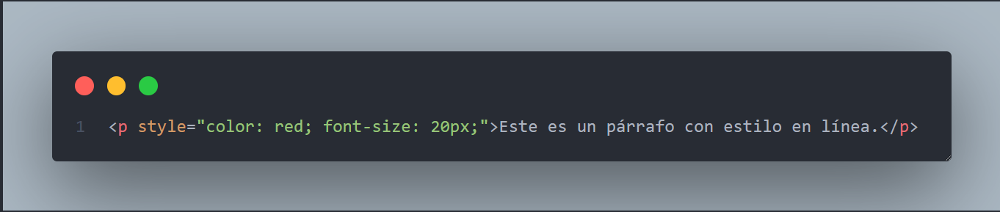
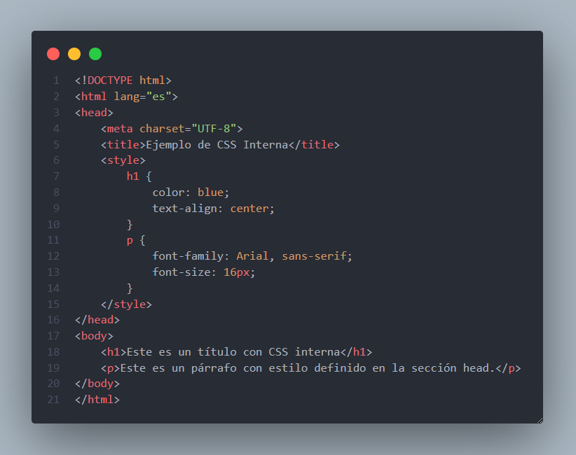
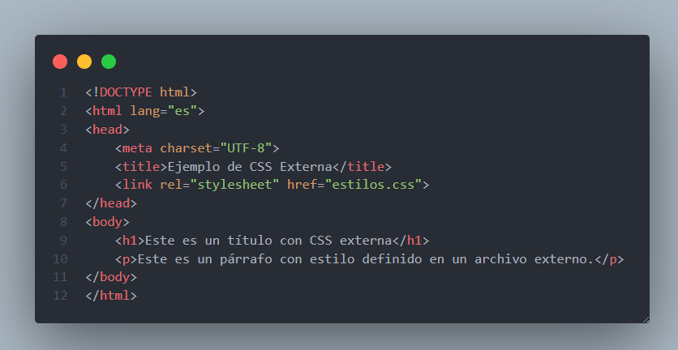
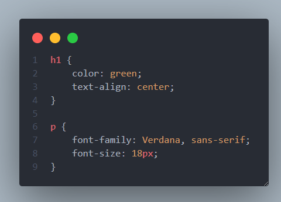

Que es Css
CSS, que significa Cascading Style Sheets (Hojas de Estilo en Cascada), es un lenguaje utilizado para definir la presentación y el estilo de un documento escrito en HTML o XML. Su principal función es controlar el diseño visual de una página web, permitiendo separar el contenido (HTML) de su apariencia (CSS).
¿Para qué sirve CSS?
- Definir estilos visuales: Permite establecer colores, fuentes, tamaños, márgenes, bordes, fondos y otros aspectos visuales de los elementos de una página web.
- Responsive Design: Facilita la creación de diseños adaptables a diferentes dispositivos (móviles, tablets, escritorio) mediante el uso de media queries.
- Reutilización de estilos: Permite aplicar los mismos estilos a múltiples elementos o páginas, lo que mejora la eficiencia y consistencia del diseño
- Animaciones y transiciones: CSS permite crear efectos visuales dinámicos, como animaciones y transiciones suaves entre estados.
- Mejora la accesibilidad: Al separar el contenido de la presentación, se facilita la creación de sitios web más accesibles y fáciles de mantener.
Formas de aplicar css
Css en linea
CSS interna
CSS externa

